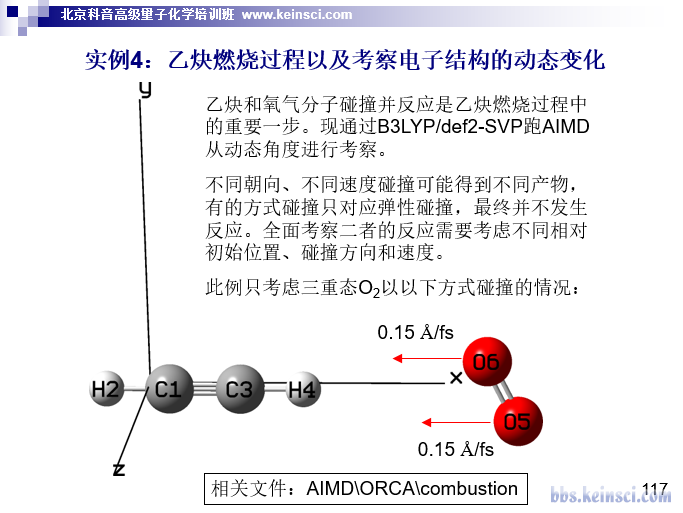

详谈Multiwfn的命令行方式运行和批量运行的方法Detailed introduction to the command line running and batch running methods of Multiwfn
文/Sobereva@北京科音 2021-Aug-30
0 前言
强大、免费的波函数分析程序Multiwfn（http://sobereva.com/multiwfn）已经被计算化学研究者使用得非常普遍。虽然Multiwfn通常是以交互式方式使用，一次分析一个体系，但在Multiwfn手册5.2、5.3节也已经明确写明了怎么通过命令行方式使用、怎么通过脚本一次算一批体系，我的大量Multiwfn相关博文里也都用了脚本非常方便地实现自动和批量分析，但还是总有用户问一些相关的初级问题。因此，笔者决定在本文专门十分详细且深入浅出地讲解一下Multiwfn的命令行方式运行和批量运行的方法，并给出许多类型各异的例子，令读者充分了解到靠脚本运行Multiwfn的极度便利。本文的很多内容对于通过脚本运行其它计算化学程序也是共通、适用的，某种意义上也算是个计算化学脚本编写入门教程。
如果读者还没看过这三篇，请看一下了解Multiwfn的相关常识：《Multiwfn入门tips》（http://sobereva.com/167）、《Multiwfn FAQ》（http://sobereva.com/452）、《详谈Multiwfn支持的输入文件类型、产生方法以及相互转换》（http://sobereva.com/379）。笔者假定读者有最基本的Windows和Linux常识。如果本文有些术语、命令你不清楚，请自行Google。
需要强调的是，做计算化学的人，哪怕不会Fortran、C、Python等编程语言，至少也该会写shell脚本。诸如用Multiwfn以相同的流程分析三、四个体系，那没必要用脚本；处理10个体系，不用脚本也能接受；但如果要处理几十、上百个体系，不利用脚本是绝对不可能的，手动一个个操作不仅极度耗时，无异于原始人，还容易在疲惫时中途不慎弄错数据。如果要用Multiwfn对大批体系算一堆描述符（见《Multiwfn可以计算的分子描述符一览》http://sobereva.com/601）用于机器学习等目的，不会写脚本完全不可能实现。本文涉及的脚本大多是以Bash shell（主流Linux系统默认的shell）的语法写的，既可以在Linux下用，也可以在Windows里通过cmder模拟的Bash环境下使用（也可以在VMware等虚拟机里虚拟的linux系统下或WSL、Cygwin等环境下使用）。如果你不了解cmder的话，看《量子化学程序ORCA的安装方法》（http://sobereva.com/451）里面的cmder介绍，十分方便。Bash shell脚本编程很容易学，如果没有相关知识的话建议看看入门教程https://linuxconfig.org/bash-scripting-tutorial-for-beginners和https://en.wikibooks.org/wiki/Bash_Shell_Scripting，顶多两个晚上就足够学明白。另外还有个Linux下常用命令和Bash脚本语法的速查表可以看看：https://github.com/skywind3000/awesome-cheatsheets/blob/master/languages/bash.sh。
在Windows下也可以写batch脚本（批处理脚本，以.bat为扩展名）实现批量执行，但batch脚本灵活程度远不及Bash shell脚本，所以在本文中只是很简略涉及。本文使用的Windows下的文本终端（命令行环境）是cmd，而Powershell完全不在本文中考虑，笔者感觉设计得实在太烂。
下文第1节先介绍怎么通过命令行方式运行Multiwfn，在第2节会给出将命令行方式运行与脚本相结合的一些实际例子，第3节介绍批量运行Multiwfn的方法，第4节给出通过脚本实现Multiwfn批量计算的一些实际例子。读者务必在看懂本文的例子后举一反三，灵活利用脚本将大批量或过程复杂的分析尽可能变得自动化，避免当原始人。
1 Multiwfn的命令行方式的运行方法
通常运行Multiwfn时都是先启动Multiwfn，然后根据屏幕上的提示手动一行行输入指令。如果你经常要对不同体系做同一种分析，而且每次分析时要输入的命令都是相同的话，那么为了避免每次分析时都重新敲一遍键盘，十分建议通过命令行方式运行，这样只需要一行命令就可以实现分析目的。老有些特别初级的用户嫌Multiwfn不是完全图形界面的程序，实际上正是Multiwfn的文本+图形界面混合的设计，才令用户可以方便地以纯命令行方式运行Multiwfn，并进而嵌入到脚本里实现自动化。
顺便普及个常识：在Windows下进入cmd命令行窗口是按Win+R键，然后输入cmd，之后可以通过cd命令进入特定目录。笔者很建议按照http://bbs.keinsci.com/thread-22940-1-1.html的做法给Windows的右键添加“在此处打开命令行窗口”选项，这样进入cmd后直接就处在当前目录下。
1.1 命令行窗口下Multiwfn的启动
先说一下命令行窗口下Multiwfn的启动。在Linux环境下，如果你严格按照Multiwfn手册2.1.2节的说明进行了安装，就可以在任何地方直接输入Multiwfn命令启动。如果你是在Windows的cmd命令行窗口下，且当前所在目录就是含有Multiwfn.exe和配置文件settings.ini的目录，也是直接输入Multiwfn命令就可以启动；如果当前是在其它目录下，需要进入Windows的“高级系统设置”- “高级”- “环境变量”，将Multiwfn.exe所在目录加入到Path变量里，并且新建一个Multiwfnpath变量，将变量值设为settings.ini的所在目录。之后在cmd里，无论当前处在哪个目录，也都可以通过输入Multiwfn命令启动了。
Multiwfn以命令行方式启动时可以结合输入文件名以及选项/参数，这在Multiwfn手册2.2节里说了。格式是：Multiwfn [输入文件路径] [选项/参数]。选项/参数没写的话就会用默认值，可以指定的有：
-nt [线程数]：并行运算的线程数。也可以通过settings.ini里nthreads参数设默认值
-uf [序号]：用户自定义函数（user-defined function）的序号。也可以通过settings.ini里iuserfunc参数设默认值
-silent：开启silent模式，此时所有原本会自动蹦出图形窗口的场合就不会自动蹦出了，这样在批量运行Multiwfn时就不用手动一次次关闭图形窗口了。也可以通过settings.ini里isilent参数设默认值
-set [路径]：settings.ini文件的路径。没设的话会先在当前目录下寻找settings.ini，如果找不到则会在Multiwfnpath环境变量设定的目录下找settings.ini
例如可以这么运行：Multiwfn /nico/COCl2.fch -nt 36 -set /sob/tmp/settings.ini -silent。输入文件如果没写的话，程序会在启动后提示你输入。
1.2 以命令行方式用Multiwfn做分析
在cmd窗口或Linux的终端中，可以通过重定向方式将某个文本文件里记录的指令传递给Multiwfn，文本文件里每一行的内容就是在Multiwfn里输入的一次指令，如果指令是直接敲回车就在相应位置写个空行。例如，要计算拉普拉斯键级，并且将所有原子间的键级矩阵导出成文本文件，在Multiwfn中载入输入文件后需要输入的命令是
9 //键级分析
8 //拉普拉斯键级
y //把键级矩阵导出为当前目录下的bndmat.txt
因此，如果你要对比如/sob/Rio.molden文件计算拉普拉斯键级并得到键级矩阵文件，就用文本编辑器创建一个文本文件，例如叫LBO.txt，内容是以下三行
9
8
y
然后运行Multiwfn /sob/Rio.molden < LBO.txt，运行完毕后当前目录下就有了我们要的bndmat.txt。
Multiwfn运行时输出的信息都显示在屏幕上，如果你想把其中一部分保存下来，按照Multiwfn手册5.4节说的，直接在文本窗口选中一个区域复制，然后粘贴到文本编辑器或Excel等程序里即可。也可以把输出在屏幕上的所有信息都重定向到一个文本文件里，比如保存到out.txt就输入Multiwfn /sob/Rio.molden < LBO.txt > out.txt。如果想让输出信息既显示在屏幕上也保存到文本文件里，就用|tee，即Multiwfn /sob/Rio.molden < LBO.txt |tee out.txt。
在Bash shell下还有一种实现上面例子的做法，是创建一个文本文件，比如叫foo.sh并放在当前目录下（习俗上Bash脚本文件用.sh后缀），内容写
Multiwfn /sob/Rio.molden << EOF > out.txt
9
8
y
EOF
然后给脚本用chmod +x ./foo.sh加上可执行权限，之后输入./foo.sh运行之即可。这个脚本从第二行开始的内容会被作为命令依次传递给Multiwfn，直到EOF那行为止（不是必须叫EOF，脚本里两处EOF改用其它名字也可以。用EOF，即end of file，是常见习俗）。
在Bash shell下还有更简单的通过命令行方式运行Multiwfn的做法，就是通过管道直接把要执行的命令传递给Multiwfn，这样就免得创建记录执行指令的文本文件了。例如上例可以通过直接输入以下命令达到相同目的
echo -e "9\n8\ny" | Multiwfn /sob/Rio.molden > out.txt
这里9\n8\ny是被传递给Multiwfn的指令，每个\n代表按一次回车（最后一次的不用明确写），因此传过去的指令就是9[回车]8[回车]y[回车]。
如果你既不想让Multiwfn计算过程输出的信息显示在屏幕上，也不想存到某个文件里，可以把上面的> out.txt改为> /dev/null（对于Linux）或改为> NUL（对于cmd），这即是把输出信息定向到了垃圾桶设备里。
大家肯定发现了，在按照上面的做法在运行结束后，屏幕上会看到诸如这样的信息
forrtl: severe (24): end-of-file during read, unit -4, file CONIN$
Image PC Routine Line Source
Multiwfn.exe 00007FF6BB5B938F Unknown Unknown Unknown
Multiwfn.exe 00007FF6BB56C980 Unknown Unknown Unknown
...略
这是因为你没有优雅地（gracefully）退出Multiwfn，而相当于运行完特定指令后直接强制把Multiwfn关了，这属于意外退出，因此最后会输出一堆报错。这些信息完全不用管它！因为我们想达到的目的已经达到了。但是如果你嫌它们碍眼，不想输出这堆破信息，那也可以加入额外的指令来优雅地退出，也就是在Multiwfn中先返回主菜单，然后输入q。具体来说，上面那个例子改成
echo -e "9\n8\ny\n0\nq" | Multiwfn /sob/Rio.molden > out.txt
这里传过去的指令中的0是从键级分析功能退回到主菜单的选项，q是用来优雅地退出。还一个做法是不改传入的指令，但是利用2>把上面的报错信息重定向到垃圾桶里从而避免显示出来：
echo -e "9\n8\ny" | Multiwfn /sob/Rio.molden > out.txt 2> /dev/null
小常识：>是用来重定向标准输出信息的，包括Multiwfn程序本身输出的所有信息。2>是用来重定向标准错误信息的，像上面那些由操作系统输出的报错信息就属于这类。如果标准输出和错误输出信息想全都重定向到某个文件里，最简单的做法是用&>，但cmd不支持这个，cmd里需要写成> out.txt 2>&1（在Linux里也可以这么写）。
Multiwfn手册4.4节里有通过主功能4绘制平面图的大量例子，显然你也可以用上面的做法通过一行命令就让Multiwfn的主功能4作出图来，在主功能4后处理菜单里直接给了保存图像文件的选项。但别忘了要么把settings.ini里的isilent设为1，要么在运行指令后面加上-silent，否则平面数据算完后会自动在屏幕上蹦出图像，到时候还得手动关闭。
通过以上介绍，可以看出通过命令行方式使用Multiwfn相当容易。想通过命令行方式实现某种分析时，你只需随便找个简单小体系在Multiwfn的交互式界面里操作一遍，把要输入的命令都记下来，就自然知道通过命令行方式运行怎么实现了。
2 通过脚本运行Multiwfn的一些实例
下面提供几个通过脚本运行Multiwfn的实例，体现出利用脚本做分析的极度便利性，其中利用了上面介绍的命令行方式运行Multiwfn的知识。
2.1 一键实现晶体密度预测
在《使用Multiwfn预测晶体密度、蒸发焓、沸点、溶解自由能等性质》（http://sobereva.com/337）的1.1节笔者介绍了怎么利用Multiwfn基于分子表面静电势描述符预测中性分子的晶体密度，读者请先把那篇文章里的计算流程看一遍，原理不再累述。这里我们把计算流程写成一个Bash脚本preddens.sh，用户只需运行比如./preddens.sh RDX.fchk命令就能用这个脚本调用Multiwfn对RDX.fchk做分子表面静电势分析，并自动提取数据、按照预测公式给出预测的密度值，省得自己提取数据和手算了。此脚本内容如下，也可以在http://sobereva.com/attach/612/preddens.sh下载。
#!/bin/bash
echo "Running:" $1
Multiwfn $1 << EOF > out.txt
12
0
-1
-1
q
EOF
t1=$(grep "Estimated density" out.txt | awk -F : '{print $2}' | awk '{print $1}')
t2=$(grep "Product of sigma^2_tot and nu" out.txt | awk -F \( '{print $2}')
echo "M/Vm:" $t1 "g/cm^3"
echo "nu*sig2tot:" $t2 "(kcal/mol)^2"
echo "$t1 $t2" | awk '{ print "Predicted density: " a*$1+b*$2+g " g/cm^3"}' a=0.9183 b=0.0028 g=0.0443
rm -f out.txt
使用./preddens.sh RDX.fchk命令进行计算会看到以下输出
Running: RDX.fchk
M/Vm: 1.8045 g/cm^3
nu*sig2tot: 26.08649 (kcal/mol)^2
Predicted density: 1.77441 g/cm^3
脚本首先告诉用户当前算的是哪个文件，算完后会从Multiwfn输出文件里把M/Vm和νσ2tot两项提取并显示出来，最后利用这两个值和拟合参数按照预测公式给出预测的密度。
这里来详细逐行解读一下脚本内容：
• #!/bin/bash代表将这个脚本当做Bash shell脚本来执行，使用/bin/bash作为语法的解释器
• echo "Running:" $1里的echo命令用来将后面的内容输出。变量前头要带着$来引用，$1变量对应的是这个脚本接收到的第1个参数，也即上例的RDX.fchk。如果脚本还接上了更多的参数，分别对应$2、$3...变量。$#变量是传入的参数总个数
• Multiwfn $1 << EOF > out.txt这行和下面几行内容代表用Multiwfn执行脚本后面接的那个文件，信息输出到当前目录下的out.txt里。往Multiwfn里传入的命令12代表进入主功能12定量分子表面分析功能，后面的0是开始做分析，接下来两个-1对应返回主菜单，最后q是优雅地退出Multiwfn。不清楚这些指令的含义的话自己在Multiwfn交互式界面里照着敲一遍，看屏幕上的提示自然就明白了
• 之后t1=$(grep "Estimated density" out.txt | awk -F : '{print $2}' | awk '{print $1}')这行略微复杂，这里一点点解释。t1用来记录从Multiwfn的输出文件里提取的M/Vm这一项，t1=$( ... )代表把$()里的命令的运行结果赋值给t1变量，grep "Estimated density" out.txt代表把Multiwfn输出文件里含有Estimated density的行提出来，即Estimated density according to mass and volume (M/V): 1.8045 g/cm^3这一行。我们要把这里的1.8045提取出来，因此把grep命令返回的这一行通过管道方式（|符号）传递给后面的awk命令。awk是个特别常用的基于命令的文本处理工具，基本用法请自行Google。awk -F : '{print $2}'代表以:分隔符，把传过来的信息的第2项（被分隔符分隔的第i部分对应$i变量）用print命令输出出来，即 1.8045 g/cm^3。这部分信息之后又被传递给awk '{print $1}'，awk默认情况下会以一个或多个空格作为分隔符，因此被输出的变量$1对应的就是1.8045。
• t2=$(grep "Product of sigma^2_tot and nu" out.txt | awk -F \( '{print $2}')这行命令将νσ2tot值赋予t2变量。它先把输出文件里下面这行取出来
Product of sigma^2_tot and nu: 0.00006625 a.u.^2 ( 26.08649 (kcal/mol)^2)
然后交由awk输出以(为分隔符的第2部分，即26.08649。注意由于(符号有特殊含义，所以用-F指定分隔符的时候前面加了个\避免它被转义。
• echo "M/Vm:" $t1 "g/cm^3"这行把相关字符串和t1变量值一起输出出来给用户看
• 记录M/Vm和νσ2tot的t1和t变量已经有了，接下来就是将它们与拟合参数进行运算，通过下面这行来实现：
echo "$t1 $t2" | awk '{ print "Predicted density: " a*$1+b*$2+g " g/cm^3"}' a=0.9183 b=0.0028 g=0.0443
这里echo "$t1 $t2"将M/Vm和νσ2tot的值输出为同一行再传递给awk，它们就对应awk里$1和$2两个变量了。awk命令后头a=0.9183 b=0.0028 g=0.0443是把alpha、beta、gamma三个拟合参数分别命名为a、b、g变量，之后就可以在'{ }'扩住的awk的指令里使用了。awk的指令print "Predicted density: " a*$1+b*$2+g " g/cm^3"用来输出双引号扩住的字符串以及预测公式计算的结果。
实际上不定义a、b、g变量而直接把其数值写到awk指令里也完全可以，即下面这样
echo "$t1 $t2" | awk '{ print "Predicted density: " 0.9183*$1+0.0028*$2+0.0443 " g/cm^3"}'
• 最后out.txt就没用了，因此用rm -f删除之。用-f时系统不会让你再确认是否删除。
实际上，上面这个脚本倒数第二行也可以写为
echo "Predicted density:" `echo "0.9183*$t1+0.0028*$t2+0.0443" | bc -l` "g/cm^3"
这里` `扩住的echo "0.9183*$t1+0.0028*$t2+0.0443" | bc被当做一整条命令来执行，其结果返回在此处。用$()代替` `来扩住也完全可以。bc是Linux下的一个基于文本的计算器，echo把要做的运算表达式通过|传递给了bc，bc就返回了计算结果。bc结合-l选项非常重要，否则考虑的小数位数会可能会很有限导致明显的误差。用bc虽然很方便，但是注意在cmder里面没法用，而前面通过awk实现运算的话既可以在Linux下使用也可以在Windows中通过cmder提供的Bash环境里正常使用。
2.2 绘制分子表面静电势的脚本
在《使用Multiwfn+VMD快速地绘制静电势着色的分子范德华表面图和分子间穿透图》（http://sobereva.com/443）中笔者给出了非常便利的脚本用于将Multiwfn与VMD程序结合绘制效果很好的分子表面静电势图，如今在文献中已经被广泛使用，不了解的话先看一下。这一节说一下文中用的ESPiso.bat这个batch脚本的原理。在Multiwfn目录下的examples\drawESP\ESPiso.bat图标上点右键选“编辑”，可以看到内容如下，是依次执行一系列命令
Multiwfn 1.fch -ESPrhoiso 0.001 < ESPiso.txt
move /Y density.cub density1.cub
move /Y totesp.cub ESP1.cub
Multiwfn 2.fch -ESPrhoiso 0.001 < ESPiso.txt
move /Y density.cub density2.cub
move /Y totesp.cub ESP2.cub
Multiwfn 3.fch -ESPrhoiso 0.001 < ESPiso.txt
move /Y density.cub density3.cub
move /Y totesp.cub ESP3.cub
Multiwfn 4.fch -ESPrhoiso 0.001 < ESPiso.txt
move /Y density.cub density4.cub
move /Y totesp.cub ESP4.cub
move /Y *.cub "D:\study\VMD193"
其中Multiwfn 1.fch -ESPrhoiso 0.001 < ESPiso.txt就是让Multiwfn按照当前目录下的ESPiso.txt里的指令计算1.fch。我们只需要计算过程产生的cub文件，所以就没有把输出信息重定向到某个文件里而是直接显示在屏幕上。-ESPrhoiso 0.001是特殊的参数，意义在《巨幅降低Multiwfn结合VMD绘制分子表面静电势图耗时的一个关键技巧》（http://sobereva.com/602）里做了解释。Multiwfn整个计算过程中会在当前目录下产生记录电子密度格点数据的density.cub和记录静电势格点数据的totesp.cub，脚本中通过move /Y命令将它们分别改名为density1.cub和ESP1.cub，/Y选项要求若当前目录下有同名文件时总是自动覆盖而不询问用户。
以类似方式，ESPiso.bat脚本依次对当前目录下的2.fch、3.fch、4.fch也都这么计算，而如果有的fch文件并不存在，则Multiwfn的运行会自动以报错方式瞬间结束，也等于跳过这个文件而接着做后面的事。在整个ESPiso.bat的最后，move /Y命令把当前目录下所有.cub文件都挪到了VMD目录下，当前假设是D:\study\VMD193。之后，就可以用上述博文里的ESPiso.vmd脚本里定义的iso或iso2命令基于VMD目录下的电子密度和静电势的cub文件绘制分子表面静电势着色图了。
再来看记录了Multiwfn要执行的指令的ESPiso.txt里的内容，如下所示，每一行的含义都在//后面进行了注释（后同）
5 //进入主功能5（计算格点数据）
1 //被计算的是电子密度
2 //中等质量格点
2 //把格点数据导出为cub文件，对于电子密度默认是density.cub
0 //返回主菜单
5 //再次进入主功能5
12 //被计算的是静电势
1 //低质量格点（比电子密度格点数据的格点质量低一个档，这是因为计算静电势耗时较高，而且分子表面静电势变化较为平滑，因此低一个档也不至于投影上去的静电势对应的颜色明显不够准确）
2 //把格点数据导出为cub文件，对于静电势默认是totesp.cub
在前述的《使用Multiwfn+VMD快速地绘制静电势着色的分子范德华表面图和分子间穿透图》中也提到，在examples\drawESP\目录下还有ESPiso_eV.bat和ESPiso_eV.txt，如果用它俩代替分别ESPiso.bat和ESPiso.txt，则静电势格点数据就会用eV而非默认的a.u.为单位。这是如何实现的？打开记录运行指令的ESPiso_eV.txt文件可看到以下内容
[...略，和ESPiso.txt相同]
0 //返回主菜单
r //重新载入文件（r意为reload）
totesp.cub //载入前面刚算完的totesp.cub
13 //主功能13，格点数据处理功能
11 //对内存中的格点数据进行数学运算
5 //乘以一个数
27.2114 //Hartree到eV的转换系数
0 //将内存中的格点数据导出为cub文件
totesp.cub //还是叫totesp.cub，因此会把之前的覆盖
2.3 对一批激发态做空穴-电子分析
《使用Multiwfn做空穴-电子分析全面考察电子激发特征》（http://sobereva.com/434）中介绍的空穴-电子分析是如今使用相当普遍的考察电子激发特征的方法，没看过此文的话建议先看看。在文中给出了一个脚本，可以一次性把所有激发态的基于空穴-电子分析框架定义的指数全都得到，免得自己一次一次手动操作分别算各个激发态、依次手动拷出来数据了。这一节就来解读一下这个脚本，脚本的内容如下
#!/bin/bash
cat << EOF > calcall.txt
18
1
D-pi-A.out
EOF
for ((i=1;i<=3;i=i+1))
do
cat << EOF >> calcall.txt
$i
1
2
0
0
1
EOF
done
./Multiwfn D-pi-A.fchk < calcall.txt |tee out.txt
rm ./calcall.txt ./result.txt -f
grep "Sr index" ./out.txt |nl >> result.txt;echo >> result.txt
grep "D index" ./out.txt |nl >> result.txt;echo >> result.txt
grep "RMSD of hole in" ./out.txt |nl >> result.txt;echo >> result.txt
grep "RMSD of electron in" ./out.txt |nl >> result.txt;echo >> result.txt
grep "H index" ./out.txt |nl >> result.txt;echo >> result.txt
grep "t index" ./out.txt |nl >> result.txt
echo
echo "Finished!"
这个脚本分为两部分，第一部分是创建一个向Multiwfn传递依次对所有激发态做分析的指令文件calcall.txt，第二部分是调用Multiwfn运行并从输出文件out.txt里提取数据。
先看第一部分。下面这段内容是创建calcall.txt文件，命令是先进入主功能18（电子激发分析），再进入空穴-电子分析功能（子功能1），然后输入的D-pi-A.out是Gaussian的TDDFT任务的输出文件名字，Multiwfn会从里面读取组态系数信息。
cat << EOF > calcall.txt
18
1
D-pi-A.out
EOF
下面这部分通过for ; do ... done语句进行循环，i变量从1开始每次增加1直到3，因此默认情况相当于依次分析最低3个激发态。
for ((i=1;i<=3;i=i+1))
do
cat << EOF >> calcall.txt //把这次循环产生的内容追加到之前的calcall.txt的后面
$i //被分析的激发态序号，对应i变量当前的值
1 //可视化和分析空穴、电子、跃迁密度...
2 //中等质量格点
0 //现在定量指标已经被输出了。从后处理菜单返回
0 //从空穴-电子分析功能返回主功能18
1 //再次进入空穴-电子分析，之后会再让你输入被分析的激发态序号
EOF
done
然后脚本用Multiwfn基于上面的过程产生的指令文件calcall.txt进行计算，信息输出到out.txt里。之后的rm ./calcall.txt ./result.txt -f把当前已经无用的指令文件删掉，并且如果上次执行脚本后若产生了result.txt也给删掉。
接下来就是从out.txt里提取数据了。Multiwfn对每个激发态计算出一大堆衡量电子激发特征的定量指标，比如输出D指数的那行内容是这样的：
D_x: 0.005 D_y: 0.819 D_z: 0.001 D index: 0.819 Angstrom
脚本中下面这条语句用来把所有含有D index的行都提取出来，通过管道传递给nl命令来给每一行都加上行号（也即相当于在行首标记了相应激发态的序号），并追加到记录总结果的文件result.txt末尾
grep "D index" ./out.txt |nl >> result.txt;echo >> result.txt
上面这行后面的echo >> result.txt用来往result.txt里添加一个空行。;符号使得多行内容可以写在一行里显得简洁。
上面这个脚本运行后得到的result.txt内容如下，看起来非常清晰
1 Sr index (integral of Sr function): 0.51896 a.u.
2 Sr index (integral of Sr function): 0.64906 a.u.
3 Sr index (integral of Sr function): 0.54538 a.u.
1 D_x: 0.522 D_y: 0.001 D_z: 0.001 D index: 0.522 Angstrom
2 D_x: 3.481 D_y: 0.007 D_z: 0.025 D index: 3.481 Angstrom
3 D_x: 0.574 D_y: 0.001 D_z: 0.001 D index: 0.574 Angstrom
1 RMSD of hole in X/Y/Z: 1.443 1.160 0.437 Norm: 1.902 Angstrom
2 RMSD of hole in X/Y/Z: 3.055 0.826 0.740 Norm: 3.251 Angstrom
3 RMSD of hole in X/Y/Z: 0.984 1.032 0.416 Norm: 1.486 Angstrom
略...
空穴-电子分析功能还可以导出比如空穴、电子、跃迁密度、密度差等函数的格点数据。稍微举一反三改写脚本和传给Multiwfn的命令，就可以实现一次性把所有激发态的格点数据都分别导出了。
2.4 一键实现RESP电荷计算的脚本
在《计算RESP原子电荷的超级懒人脚本（一行命令就算出结果）》（http://sobereva.com/476）里我给了一个仅需一行命令就能计算出做分子动力学很常用的RESP电荷的Bash脚本，是Multiwfn目录下的examples\RESP\RESP.sh，这里来解读一下，我就直接把关键性的注释插入到下面给出的原脚本里了。读者请先看一下那篇博文了解一下脚本的用法，这个脚本会自动调用Gaussian先对结构用较便宜级别进行优化，然后在更好的基组下算单点任务产生波函数文件，最后交由Multiwfn计算RESP电荷。
以井号开头的是注释，是给自己或者用户看的，包括用处、版本、用法、作者信息
#!/bin/bash
下面把Gaussian的优化和单点任务的关键词赋予到相应变量里，用户可根据实际情况修改溶剂名、计算级别。pop=MK结合IOp要求Gaussian把拟合点上的静电势数值输出出来
keyword_opt="# B3LYP/def2SVP em=GD3BJ scrf(solvent=water) opt=loose"
keyword_SP="# B3LYP/def2TZVP em=GD3BJ scrf(solvent=water) pop=MK IOp(6/33=2,6/42=6)"
Gaussian=g09 //将执行Gaussian用的命令指定为一个变量
export inname=$1 //将脚本后面传入的第一个参数（含有结构信息的文件路径）设为inname变量
filename=${inname%.*} //把inname记录的文件名的后缀去掉设为filename变量
suffix=${inname##*.} //把inname记录的文件名的扩展名设为suffix变量
if [ $2 ];then //如果运行脚本时指定了第2个参数（净电荷），输出出来并且设为chg变量
echo "Net charge = $2"
chg=$2
else //脚本没有跟着第2个参数的情况，默认电荷为0
echo "Net charge was not defined. Default to 0"
chg=0
fi
if [ $3 ];then //如果运行脚本时指定了第3个参数（自旋多重度），输出出来并且设为multi变量
echo "Spin multiplicity = $3"
multi=$3
else //脚本没有跟着第3个参数的情况，默认自旋多重度为1
echo "Spin multiplicity was not defined. Default to 1"
multi=1
fi
下面的命令让Multiwfn载入输入文件，通过主功能100的子功能2把载入的体系坐标导出为非常简单的xyz文件格式（tmp.xyz）
Multiwfn $1 > /dev/null << EOF
100
2
2
tmp.xyz
0
q
EOF
下面的内容用来创建Gaussian优化任务的输入文件gau.gjf的坐标之前的部分。可见关键词、净电荷、自旋多重度都是直接用的前面定义的相应变量。并且计算后保留gau.chk。
cat << EOF > gau.gjf
%chk=gau.chk
$keyword_opt
//空行
test
//空行
$chg $multi
EOF
下面把tmp.xyz的第2行之后的部分（坐标部分）输出并追加到gau.gjf最后面。NR是awk里的特殊变量，对应被处理的文件当前的行号
awk '{if (NR>2) print }' tmp.xyz >> gau.gjf
最后给gau.gjf末尾加两个空行，这是命令行方式运行Gaussian所要求的
cat << EOF >> gau.gjf
//空行
//空行
EOF
rm tmp.xyz //现在tmp.xyz就没用了，删之
下面运行Gaussian，做的是优化任务。期间大家可以监控这里产生的gau.out判断优化是否顺利，或者判断如果脚本中途运行失败是什么原因
echo Running optimization task via Gaussian...
$Gaussian < gau.gjf > gau.out
接下来产生单点任务的输入文件。标题行、净电荷、自旋多重度、坐标直接从优化产生的gau.chk中读取，并且读取里面收敛的波函数当初猜，有助于减少本次SCF达到收敛的迭代次数。
cat << EOF > gau.gjf
%chk=gau.chk
$keyword_SP geom=allcheck guess=read
//空行
//空行
EOF
下面运行Gaussian做单点任务
echo Running single point task via Gaussian...
$Gaussian < gau.gjf > gau.out
下面语句的意思是如果Gaussian输出文件gau.out里能搜到含有Normal termination的行，判断结果就为真，就显示Done!，否则就提示出错并且退出脚本。exit后面跟的数字含义见https://tldp.org/LDP/abs/html/exitcodes.html
if (grep -Fq "Normal termination" gau.out) ; then
echo Done!
else
echo The task has failed! Exit the script...
exit 1
fi
调用formchk程序将gau.chk转换为同目录下的gau.fchk，期间不在屏幕上输出信息
echo Running formchk...
formchk gau.chk> /dev/null
调用Multiwfn以gau.fchk为输入文件，通过主功能7（布居分析）里的子功能18计算RESP电荷
echo Running Multiwfn...
Multiwfn gau.fchk > /dev/null << EOF
7
18
8 //计算时从Gaussian输出文件里读取拟合点的静电势信息而不直接计算静电势
1 //开始标准RESP电荷计算
gau.out //从gau.out里读取静电势
y //导出计算完的RESP电荷以及原子坐标成为gau.chg
0
0
q //优雅地退出
EOF
rm gau.gjf gau.fchk gau.chk gau.out //删除之前留下的已无用的文件
chgname=${1//$suffix/chg} //把输入文件的扩展名替换成chg并设为chgname变量
mv gau.chg $chgname //把gau.chg改名，使得最终得到的chg文件和输入文件有相同的名字
最后输出任务成功的信息，告诉用户产生的chg文件的名字。括号前面的\是为了避免此符号被转义。
echo Finished! The optimized atomic coordinates with RESP charges \(the last column\) have been exported to $chgname in current folder
由此例可见，通过写脚本，可以让一连串的计算流程完全自动化，变得格外省事。
3 Multiwfn的批量运行的方法
使用Multiwfn处理一批文件，一种做法是像前面2.2节那样，把要运行的一批命令手动写入批处理文件或Bash脚本里，另一种做法是用循环语句，自动令Multiwfn对满足条件的一批文件依次进行计算。例如，让Multiwfn按照genELFcub.txt文件里的指令对当前目录下所有.wfn文件依次进行计算，并且假定任务会产生ELF.cub文件，要把输入文件的名字作为前缀加上去，通过下面的脚本就可以实现，分为两种情况
• Bash脚本：建立一个.sh脚本文件，写入以下内容，然后执行脚本
#!/bin/bash
for inf in *.wfn
do
echo Running $inf ...
Multiwfn $inf < genELFcub.txt > /dev/null
mv ELF.cub ${inf//.wfn}_ELF.cub
done
此脚本中inf变量循环当前目录下每个.wfn文件，交给Multiwfn默默执行，屏幕上提示正在运行哪个文件。${inf//.wfn}_ELF.cub代表去除当前输入文件的.wfn扩展名后再加上_ELF.cub。比如如果正在算的是Kanan.wfn，则产生的ELF格点文件将被自动改名为Kanan_ELF.cub。
• batch脚本（可直接运行于Windows）：建立一个文本文件，扩展名改为bat，写入以下内容并保存，然后双击执行，或者在cmd里输入.bat文件名执行之。里面涉及的语法解释参看《使用Gaussian时的几个实用脚本和命令》（http://sobereva.com/258）。
for /f %%i in ('dir *.wfn /b') do (
Multiwfn %%i < genELFcub.txt > NUL
rename ELF.cub %%~ni_ELF.cub
)
4 批量运行Multiwfn的实例
下面看几个批量运行Multiwfn的一些实例。
4.1 批量格式转换
Multiwfn支持非常丰富的输入文件格式，而且还能把载入的信息导出成许多文件格式、产生诸多量子化学程序和一些第一性原理程序的输入文件。利用这个特点，结合自己写的脚本，就可以轻易实现大批量的文件格式之间自由转换。这在《一键把所有gjf文件转成xyz文件、把所有Gaussian输出文件转成gjf文件的脚本》（http://sobereva.com/530）里给了现成的脚本作为例子，请先阅读一下此文了解脚本用法。这里我们就看一下其中的将当前目录下所有Gaussian输出文件（.out）里最后一帧结构转化为Gaussian输入文件（.gjf）的脚本，这对应Multiwfn目录下的examples\scripts\outgjf.sh。脚本内容和注释如下
#!/bin/bash
icc=0 //初始化累加变量
nfile=`ls *.out|wc -l` //ls *.out获得out文件列表，交由wc -l返回行数，故nfile是out文件的总数
for inf in *.out //循环当前目录下所有out文件
do
((icc++)) //令icc加1。(( ))里可以做这种整数运算。当前的icc是正在被处理的out文件的序号
echo Converting $inf to ${inf//out/gjf} ... \($icc of $nfile\) //其中${inf//out/gjf}是把inf变量对于的文件名的扩展名从out改为gjf后的名字。$icc of $nfile告诉用户正在处理第几个、总共有多少个
Multiwfn $inf << EOF > /dev/null
100 //主功能100
2 //导出文件和产生输入文件
10 //产生Gaussian输入文件
${inf//out/gjf} //新产生的Gaussian输入文件名
0 //返回主菜单
q //优雅地退出
EOF
done
运行这个脚本后，可以看到诸如这样的运行过程提示
...略
Converting B2H6.out to B2H6.gjf ... (5 of 151)
Converting Benzaldehyde.out to Benzaldehyde.gjf ... (6 of 151)
Converting Benzene.out to Benzene.gjf ... (7 of 151)
...略
显然，如果想让Multiwfn批量在其它两种文件格式间转换，只需要修改被考虑的输入文件对象（即把*.out改成相应的），修改传递给Multiwfn的指令（即进入主功能100的子功能2后选择的选项），并把${inf//out/gjf}里的out和gjf改成相应的即可。
4.2 提取所有体系的HOMO-LUMO gap并计算平均值
如《使用Multiwfn观看分子轨道》（http://sobereva.com/269）所述，Multiwfn在载入fch/molden/mwfn/gms这样记录了占据轨道和空轨道的波函数文件后，当进入主功能0时，不仅会蹦出图形窗口用来观看体系结构和轨道等值面，在文本窗口还输出了许多信息，包括HOMO-LUMO gap，如下所示。
Note: Orbital 5 is HOMO, energy: -0.291987 a.u. -7.945379 eV
Orbital 6 is LUMO, energy: 0.065333 a.u. 1.777798 eV
HOMO-LUMO gap: 0.357320 a.u. 9.723178 eV 938.144245 kJ/mol
这一节提供一个Bash脚本，从当前目录下所有fch文件里提取HOMO-LUMO gap并连同文件名一起输出到当前目录下的gap.txt，在最后还给出HOMO-LUMO gap的平均值和最小值。此脚本连同注释内容如下，原脚本可以在http://sobereva.com/attach/612/getgap.sh下载。
#!/bin/bash
rm -f gap.txt //删除之前可能残留的gap.txt
avggap=0 //用于记录HOMO-LUMO gap的平均值。先对所有体系累加，最后除以总数
nfile=0 //记录当前正处理的文件序号
for inf in *.fch
do
((nfile++))
echo Processing $inf "..."
Multiwfn $inf -silent << EOF > out.txt //注意这里用了-silent避免蹦出主功能0的图形界面
0
q //优雅地退出
EOF
gapthis=$(grep "HOMO-LUMO gap" out.txt |awk '{print $5}') //从Multiwfn输出信息中找含有HOMO-LUMO gap的行，然后提取以空格分隔时的第5个值，即eV为单位的gap
echo $inf: $gapthis eV >> gap.txt //向gap.txt里输出当前体系文件名和gap值
avggap=$(echo $avggap+$gapthis | bc -l) //把当前体系的gap累加到avggap变量上
rm -f out.txt
if [[ $nfile -eq 1 ]] ; then //处理的是第1个文件的情况，此时nfile等于1。[[ ]]里可以做条件判断
gapmin=$gapthis //暂把第1个文件的HOMO-LUMO gap当做最小值
namemin=$inf //记录HOMO-LUMO gap最小的体系的文件名
else
if [[ $(echo "$gapthis < $gapmin" | bc) -eq 1 ]] ; then //当前HOMO-LUMO gap小于目前最小值的情况
gapmin=$gapthis
namemin=$inf
fi
fi
done
echo | awk '{printf ("\n%s %10.6f %s\n","Average HOMO-LUMO gap:",t1/t2," eV")}' t1=$avggap t2=$nfile >> gap.txt //将avggap变量除以已处理的文件总数nfile，得到平均gap，追加到gap.txt
echo "Done! Result has been outputted to gap.txt in current folder"
echo "Totally" $nfile "files were processed"
echo $namemin has minimal gap of $gapmin eV >> gap.txt
运行这个脚本之后，得到的gap.txt里就是诸如下面的内容
HCN.fch: 18.809098 eV
naphthalene.fch: 4.829532 eV
NH3BF3.fch: 9.803340 eV
pyrazine.fch: 5.411161 eV
waterdimer.fch: 11.407130 eV
Average HOMO-LUMO gap: 10.052052 eV
naphthalene.fch has minimal gap of 4.829532 eV
可见，用脚本进行批处理和统计是相当方便的。注意由于此脚本用了bc命令，所以在cmder下面没法用。
在上面的脚本中，不能直接用对gapthis和gapmin用逻辑运算符来判断，因为Bash脚本里只能对整数变量直接做大小的判断。上面脚本中是这样写的：
if [[ $(echo "$gapthis < $gapmin" | bc) -eq 1 ]] ; then
这里先用echo "$gapthis < $gapmin" | bc把两个浮点数比大小的语句传递给bc这个数学运算工具，如果判断为真，返回1，否则返回0。$(echo "$gapthis < $gapmin" | bc)代表bc返回的数值。
脚本中下面的这行命令使用了格式化输出，使得输出信息格式严格满足我们的要求
echo | awk '{printf ("\n%s %10.6f %s\n","Average HOMO-LUMO gap:",t1/t2," eV")}' t1=$avggap t2=$nfile >> gap.txt
在awk的指令中，可以通过printf以特定格式进行输出。"\n%s %10.6f %s\n"中的\n代表换行，%s代表输出字符串，%10.6f代表输出的浮点数占10个位置，小数点后保留6位。后面跟着的"Average HOMO-LUMO gap:",t1/t2," eV"这三项就是套用前述的格式要输出的内容了。awk程序本身是用于处理特定文本文件或者通过管道传递过来的文本的，当前我们只是借用awk来做相除运算并格式化输出变量，所以前面用echo |传递一个空信息来走个形式。
4.3 对AIMD模拟里每一帧计算原子自旋布居、键级和自旋密度cub文件并作图
4.3.1 前言&准备
我们既可以对一批不同的体系通过脚本调用Multiwfn做波函数分析，也可以对同一个体系的特定过程（IRC、势能面扫描、动力学模拟等）的每一帧做波函数分析，将所有帧的分析结果汇总到一起绘图，就可以非常清晰直观地考察化学过程中电子结构的变化了。通过脚本实现对扫描和IRC的每一帧批量用Multiwfn分析然后绘图的过程在《制作动画分析电子结构特征》（http://sobereva.com/86）和《通过键级曲线和ELF/LOL/RDG等值面动画研究化学反应过程》（http://sobereva.com/200）都有详细说明。
在本节，笔者专门示例一下怎么靠脚本对ORCA跑的从头算动力学（AIMD）里每一帧进行波函数分析然后作图。读者请阅读《使用ORCA做从头算动力学(AIMD)的简单例子》（http://sobereva.com/576）了解ORCA跑动力学的初步知识。用于本节的例子是下面这个O2与乙炔反应的动力学过程，是北京科音高级量子化学培训班（http://sobereva.com/612）里的一部分，至于具体模拟细节和本文无关，就不多说了。
1.png (89.2 KB, 下载次数 Times of downloads: 145)
下载附件 Download
2021-8-30 22:21 上传 Uploaded
ORCA跑AIMD有个便利之处是可以要求每隔特定步数就把当前帧的波函数导出为gbw文件，可以之后被Multiwfn所利用。在当前模拟的输入文件中，写上dump gbw stride 10 filename "wfn"，这样每10步就会在当前目录下产生一个以wfn为前缀的gbw文件，即wfn000010.gbw、wfn000020.gbw等等，序号是当前的步数，乘以步长就是模拟时间。
注：如果你是用Gaussian跑分子动力学，没法直接通过关键词要求程序每隔一定步数就产生一次记录波函数的chk文件供Multiwfn分析，但可以先用《GauMD2xyz：将Gaussian的从头算动力学轨迹转换为xyz轨迹的程序》（http://sobereva.com/126）把动力学输出文件转成xyz格式的轨迹，再用《将多帧xyz文件转化成量子化学输入文件的工具：xyz2QC》（http://bbs.keinsci.com/thread-12468-1-1.html）中的做法把xyz的每一帧拆分成单点任务gjf文件并要求保留chk，这样按照《使用Gaussian时的几个实用脚本和命令》（http://sobereva.com/258）批量运行后就有了每一帧的chk文件。
如果把Multiwfn的settings.ini里的orca_2mklpath参数设成ORCA目录下的orca_2mkl可执行文件的路径，那么Multiwfn直接就可以载入gbw文件并做波函数分析。但假设你当前机子里没有和产生gbw文件相同版本的ORCA，那Multiwfn就没法直接打开gbw，而只能在产生gbw文件的机子上用下面的脚本先把当前目录下的gbw文件都转化为同名的molden输入文件（扩展名为.molden.input），之后Multiwfn就可以载入并分析了。如果读者仔细看了本文前面的内容，这个脚本的原理自然可以轻松理解，所以不再讲解。
#!/bin/bash
for inf in *.gbw
do
echo converting $inf ...
name=${inf//.gbw}
orca_2mkl $name -molden
echo
done
现在，当前目录下我们有了动力学过程中不同时刻的波函数文件，可以开始批量分析了。
4.3.2 获得原子的自旋布居随时间的变化
自旋密度和自旋布居在《谈谈自旋密度、自旋布居以及在Multiwfn中的绘制和计算》（http://sobereva.com/353）中有详细的说明，不了解的话先仔细看看。这里先考察一下动力学过程中几个关键原子的自旋布居随时间的变化，从而定量了解单电子的分布在反应过程中是如何变化的。
运行下面的脚本，就可以实现把所有波函数文件里4号氢原子（上面图中直接会碰上O2的那个氢原子）的原子自旋布居一次性计算并输出出来
#!/bin/bash
for input in `ls *.molden.input` //循环当前目录下所有molden输入文件
do
echo Processing $input //提示用户正在处理哪个文件
Multiwfn $input << EOF > out.txt
7 //布居分析与原子电荷计算
5 //Mulliken方法
1 //输出Mulliken布居分析结果
n //不把原子电荷输出为chg文件
0 //返回主功能7
0 //返回主菜单
q //优雅地退出
EOF
grep "Population of atoms:" -A 100 out.txt|grep "4(H )"|cut -c 41-51 >> 4.txt
done
rm -f out.txt
计算Mulliken电荷时，Multiwfn输出的原子的电子布居信息是这样的：
Population of atoms:
Atom Alpha pop. Beta pop. Spin pop. Atomic charge
1(C ) 3.16257 2.79109 0.37147 0.04634
2(H ) 0.60772 0.30555 0.30217 0.08674
3(C ) 2.89559 2.89522 0.00037 0.20919
4(H ) 1.00000 0.00000 1.00000 0.00000
5(O ) 4.23044 3.90425 0.32620 -0.13469
6(O ) 4.10368 4.10389 -0.00021 -0.20757
上面脚本倒数第二行grep "Population of atoms:" -A 100代表把Multiwfn输出的out.txt中Population of atoms:这一行及下面足够多的行（这里是100行，对当前体系足够多）都提取出来，然后传递给grep "4(H )"命令再把其中4(H )这一行提取，最后交给cut -c 41-51命令提取第41~51列的内容，即Spin pop.下面的数值，追加到4.txt末尾。之所先经历grep "Population of atoms:" -A 100这么一步，是因为当前的out.txt文件里包含4(H )的行并不止上述一处，在Population of atoms:这一行更前面还有其它地方出现过4(H )。
上面的脚本运行后，产生的4.txt内容如下
0.00097
0.00006
-0.00223
-0.00601
...略
类似地，把上面脚本里4(H )改成其它原子、把4.txt改成其它文件名，可以同理把O5和O6的自旋布居也提取出来。最后把H4、O5、O6的自旋布居放在一起通过Origin等程序作图，恰当设置后即得到下图
2.png (59.68 KB, 下载次数 Times of downloads: 137)
下载附件 Download
2021-8-30 22:21 上传 Uploaded
由上图的原子自旋布居的变化可见，将近30 fs的时候，H4基本上就变成一个氢原子了，其上面单电子数几乎精确为1。从上图还可以看到，起初O2分子上每个O都带一个alpha单电子，在O2碰上乙炔后，单电子分布变化剧烈，到最后实际上形成了一个HCO自由基和一个CO闭壳层分子，显然最后不带单电子（自旋布居为0）的O6就是CO上的氧。
4.3.3 考察键级随模拟时间的变化
键级是定量考察化学键特征的非常方便、常用的指标，在《Multiwfn支持的分析化学键的方法一览》（http://sobereva.com/471）中有详细介绍。通过下面的脚本，可以考察C1-C3、C3-O6、O5-O6的Mayer键级是怎么随模拟进行而发生变化的。
#!/bin/bash
for input in `ls *.molden.input`
do
echo Processing $input
Multiwfn $input << EOF > out.txt
9 //键级分析
1 //Mayer键级
n //不导出键级矩阵
0 //返回出菜单
q //优雅地退出
EOF
grep "1(C ) 3(C )" out.txt|cut -c 69-78 >> 1_3.txt
grep "3(C ) 6(O )" out.txt|cut -c 69-78 >> 3_6.txt
grep "5(O ) 6(O )" out.txt|cut -c 69-78 >> 5_6.txt
done
Multiwfn计算Mayer键级输出的信息格式是这样的：
...略
因此靠grep "1(C ) 3(C )" out.txt|cut -c 69-78就可以把含有C1-C3键级的那一行的第69~78列，即考虑alpha和beta电子总效果的Total:后面那个键级值提取出来。
上面的脚本运行完了之后，1_3.txt、3_6.txt和5_6.txt就分别记录了C1-C3、C3-O6、O5-O6对各个波函数文件算的键级了。将数据一起导入到Origin里并绘图，就可以得到下图。可见此图把乙炔和氧气反应动力学过程中化学键的形成和断裂的情况一览无余地清晰展现了出来，显然非常有意义。
3.png (75.6 KB, 下载次数 Times of downloads: 138)
下载附件 Download
2021-8-30 22:21 上传 Uploaded
4.3.4 考察自旋密度等值面图随模拟时间的变化
这一节我们利用Bash脚本、Multiwfn和VMD，把氧气与乙炔反应过程中自旋密度等值面的变化动画制作出来，结果如下所示，绿色和蓝色分别对应正值和负值等值面。可见此动画可以把单电子分布在反应过程中的变化非常生动直观地展现出来，颇有意义。
为了做上面的动画，我们先运行下面的脚本，它会一次性对当前目录下的molden输入文件进行计算，最终在当前目录下的cub子目录下产生一批名为"wfn[序号].cub"的自旋密度的格点数据文件。
#!/bin/bash
mkdir cub //新建cub目录
for input in `ls *.molden.input`
do
echo Processing $input
Multiwfn $input << EOF > out.txt
5 //计算格点数据
5 //自旋密度
-10 //修改延展距离
3 //对当前情况3 Bohr的延展距离已足够避免等值面被截断
2 //中等质量格点
2 //导出cub文件成为spindensity.cub
0 //返回主菜单
q //优雅地退出程序
EOF
mv spindensity.cub cub/${input//molden.input/cub} //将产生的自旋密度的cub文件的名字改成和输入文件同名
done
将上面脚本产生的cub目录放到C:\目录下。启动VMD，将我写的这个tcl语言的脚本http://sobereva.com/attach/612/showiso.tcl里的内容粘贴到VMD命令行窗口中运行，VMD就会依次载入各个cub文件，把渲染出的自旋密度为0.02 a.u.的等值面图保存为VMD目录下的“[序号].bmp”文件。这个tcl脚本内容不在本文范畴以内，因此不做解释了，VMD的tcl脚本的编写我在北京科音分子动力学与GROMACS培训班（http://www.keinsci.com/workshop/KGMX_content.html）里讲得特别系统详细。
最后，用免费的视频处理程序ffmpeg把当前目录下所有bmp文件合并成gif动画，分为两步
先基于某帧的bmp文件创建调色板文件：ffmpeg -i 00027.bmp -vf palettegen palette.png
将所有bmp文件合并为video.gif，每秒5帧：ffmpeg -r 5 -i %05d.bmp -i palette.png -lavfi paletteuse video.gif
这样得到的video.gif动画文件即前面所展示的。
5 总结&其它
本文非常详细地介绍了如何通过命令行形式方便地运行Multiwfn，以及如何利用Bash脚本或Windows下的批处理文件调用Multiwfn自动做大批量分析处理。文中不仅深入浅出地详细介绍了所有相关细节，还给出了类型多样的实例，由浅入深，涉及到常见脚本编写的方方面面。只要大家仔细把本文的说明看懂、把例子彻底搞懂，最好有时间时再看看前面笔者给出的Bash shell脚本编写的入门教程网页系统地学一下，并且遇到问题时善用google（never baidu），就可以没有压力、得心应手地针对自己遇到的实际问题写出对应的脚本，令自己从繁复的重复性的操作中彻底解放，不再需要总是在Multiwfn的交互式界面中一条条手动敲入命令以及手动提取/处理/统计数据。笔者也非常鼓励大家把经常通过Multiwfn做的操作步骤较多的分析包装成脚本，从而能够以最少限度的操作轻易完成整套分析过程，并且笔者也鼓励将这样的脚本在Multiwfn论坛http://bbs.keinsci.com/wfn（中文）或http://sobereva.com/wfnbbs（英文）上向其他用户分享。
由于如本文所介绍的，Multiwfn能够以命令行方式运行，还使得它可以在一些第三方程序中进行调用。大家可以看Multiwfn主页http://sobereva.com/multiwfn的Resources页面中的Related tools部分，里面有不少Multiwfn用户写的Multiwfn辅助程序或者借助Multiwfn计算的程序都是这么调用的Multiwfn。
虽然本文的脚本说的都是怎么以命令行方式调用Multiwfn运行以及自动化处理，即便你是其它程序的用户并且对命令行和脚本编写缺乏了解的话，应该从本文中也明显有所获益。比如如果你是GROMACS分子动力学程序的用户，仔细看过本文之后应该也已经很明白怎么通过写脚本从而自动或批量地对一个或多个体系进行建模、模拟和后处理分析了。
笔者还有很多Multiwfn相关博文里都给出了脚本，使得通过Multiwfn进行分析或绘图的过程尽可能简单和自动化，这些博文列于下面，强烈推荐大家看看。只要大家把本文全都读懂，自然也就能轻松理解这些博文里的脚本运行机制了。
《制作动画分析电子结构特征》（http://sobereva.com/86）
《通过键级曲线和ELF/LOL/RDG等值面动画研究化学反应过程》（http://sobereva.com/200）
《使用Multiwfn一键批量产生各类光谱图（含演示视频）》（http://sobereva.com/479）
《RESP2原子电荷的思想以及在Multiwfn中的计算》（http://sobereva.com/531）
《计算适用于OPLS-AA力场做模拟的1.2*CM5原子电荷的懒人脚本》（http://sobereva.com/585）
《使用Multiwfn做自然跃迁轨道(NTO)分析》（http://sobereva.com/377）
《使用Multiwfn绘制跃迁密度矩阵和电荷转移矩阵考察电子激发特征》（http://sobereva.com/436）
《使用Multiwfn+VMD快速地绘制高质量AIM拓扑分析图》（http://sobereva.com/445）
《使用Multiwfn和VMD绘制平均局部离子化能(ALIE)着色的分子表面图》（http://sobereva.com/514）
《将Gaussian等程序收敛的波函数作为ORCA的初猜波函数的方法》（http://sobereva.com/517）
最后，留给大家两个编写脚本的小练习，感兴趣的读者可以尝试做一下，以检验有没有充分掌握本文的内容，需要用到的脚本编写知识没有超越前文所介绍的
(1)首先阅读《使用Multiwfn超级方便地计算出概念密度泛函理论中定义的各种量》（http://sobereva.com/484）了解怎么通过Multiwfn的主功能22对某个体系一次性计算出化学势、亲电指数等概念密度泛函理论涉及的所有量。假定当前目录下有一堆中性闭壳层小分子的.xyz文件，请编写一个脚本，调用Multiwfn的主功能22对各个分子都计算概念密度泛函理论涉及的所有量，并且把所有小分子的电负性数值连同文件名一起输出到eleneg.txt中，也把所有小分子的亲电指数数值连同文件名一起输出到elephi.txt中，并且在这两个文件末尾给出所有计算过的分子中最大值、最小值以及对应的文件名。
(2)阅读Multiwfn手册4.4节了解怎么绘制各种平面图。假设当前目录下有某条IRC轨迹各个点的fch文件，名为[序号].fch，如00001.fch、00002.fch...。写一个脚本，调用Multiwfn对这些文件绘制4,9,10三个原子构成的平面的ELF填色图，保存成和输入文件同名的png文件。最后，再调用ffmpeg之类的程序将它们合并为gif动画。
Multiwfn一个用户写的《模板化Multiwfn运行的一种途径》（http://bbs.keinsci.com/thread-56646-1-1.html）也推荐读者们看看。
这个可太实用了，我先占个楼，我把写的Multiwfn脚本链接接都放这里 哈哈哈哈
本帖最后由 冰释之川 于 2021-8-31 08:15 编辑
ggdh 发表于 2021-8-30 22:52
这个可太实用了，我先占个楼，我把写的Multiwfn脚本链接接都放这里 哈哈哈哈
钟叔这里肯定私藏了很多脚本，坐等白嫖之

以上为本帖已下载的 1 个图片附件。